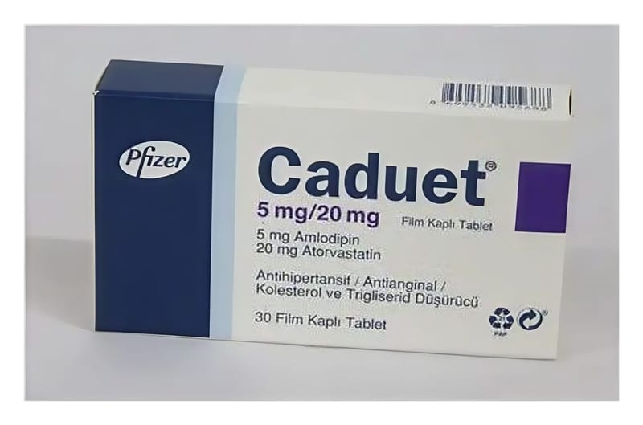

Caduet 5 mg/20 mg Film Kaplı Tablet, 30 Adet

Ne için kullanılır
KT · Bölüm 1CADUET 30 tabletlik blister ambalajda bulunur. Beyaz, oval film kaplı tabletin, bir tarafında “Pfizer” diğer tarafında ise “CDT” ve “052” yazısı bulunmaktadır.
CADUET ağız yolu ile alınır ve her tablet 5 mg amlodipine eşdeğer amlodipin besilat ve 20 mg atorvastatine eşdeğer atorvastatin kalsiyum içerir. CADUET’in bileşiminde amlodipin (kalsiyum kanal blokeri olan bir ilaç) ve atorvastatin (statin) adında diğer bir ilaç olmak üzere iki etkin madde bulunur ve doktorunuz her iki ilacın kullanımının uygun olduğunu düşündüğünde bu ilacı size verecektir. CADUET klinik olarak belirgin koroner kalp hastalığı olmayan, kan basıncı yüksek olan ve sigara kullanımı, fazla kilolu olmak, yüksek kan kolesterolü, ailede kalp hastalığı geçmişi veya diyabet gibi ek kardiyovasküler
risk faktörleri bulunan hastalarda kardiyovasküler olayları (örneğin; anjina, kalp krizi) önlemek için kullanılır. Yüksek kan basıncı ile ilişkili bu tür risk faktörlerinin varlığı, hastaların kardiyovasküler olayları yaşama riskini artırır.
CADUET, diyete ve farmakolojik olmayan diğer önlemlere verilen yanıtın yetersiz kaldığı durumlarda kullanılmalıdır.
Yüksek kan basıncı (hipertansiyon); kan basıncının anormal olarak ısrarcı bir şekilde yüksek olmasına ait bir tıbbi durumdur ve kalp-damar rahatsızlıklarının (anjina, kalp krizi, inme) bir risk faktörüdür.
Kolesterol, normal büyüme için gerekli olan, vücutta doğal olarak oluşan bir maddedir. Ancak, eğer kanınızda çok fazla kolesterol olursa; kan pıhtısı ve kalp-damar olayları riskini artıracak şekilde kan damarı duvarlarınız üzerinde birikebilir ve damarların daralmasına ve sonuçta tıkanmasına yol açabilir. Kalp hastalığının en genel nedenlerinden biri budur.